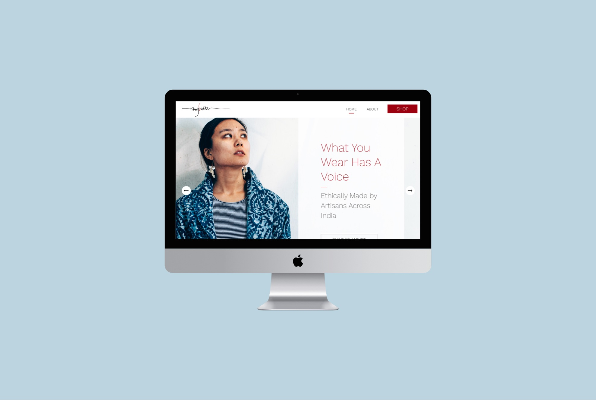
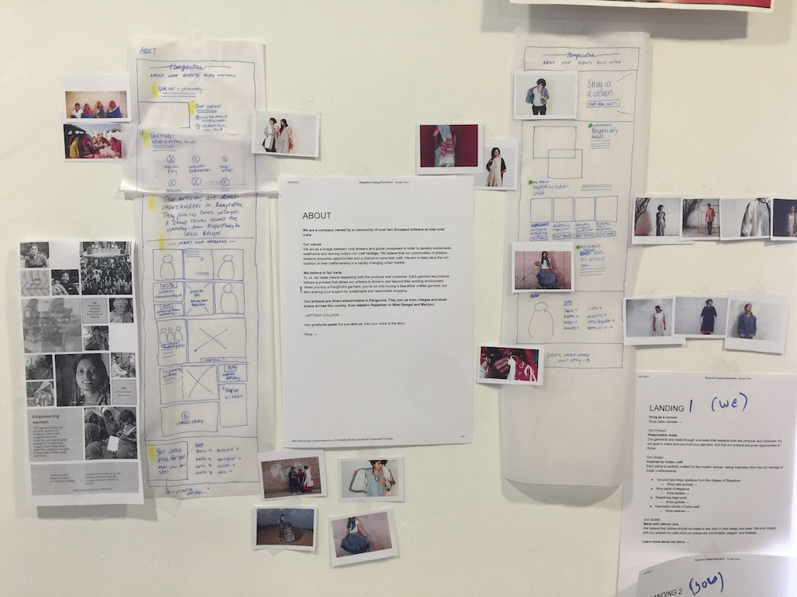

*This is a project I worked on during my time at Studio Subu. I was not responsible for visual design.
Rangsutra Crafts is a cooperative that works with and supports the livelihoods of over 3,000 artisans across India. The company is based on the principles of fair trade and a celebration of India’s rich craft heritage.
When Rangsutra came to us, they were looking to launch an e-commerce platform where products could be sold under the Rangsutra brand. Previously, they had been suppliers to larger companies like IKEA.
Design Challenge
How can we leverage Rangsutra’s website to convey the company’s social mission as well as increase consumer sales of its artisan-made products?
1. Research
As research lead, I began by formulating a research plan that would help us understand how to communicate Rangsutra’s brand and product stories to a retail consumer. The questions revolved around mindsets and behaviors related to socially conscious shopping. They included:
- Why is conscious shopping important to you?
- What factors do you consider before buying a product?
- How does a company’s socially conscious practices influence your decision to buy?
2. Key insights
Our research and key insights led to the following design principles that informed my work.

3. UX/wire framing
Keeping our design principles in mind, I wrote narratives for both the Landing and About pages on a Word doc. I then translated these ideas into wire frames that communicated Rangsutra's brand story.
Impact and final outcome
We delivered a user-friendly, mobile responsive website that both promoted Rangsutra’s products and emphasized its social mission. The Rangsutra team was extremely excited about their new digital presence during the launch in January 2018. Studio Subu continues to work with Rangsutra to develop its brand narrative and digital strategy, and will continue to monitor feedback on the website to iterate when necessary.